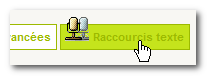
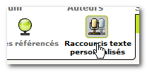
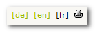
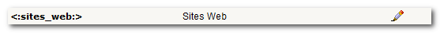
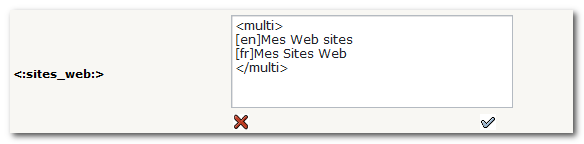
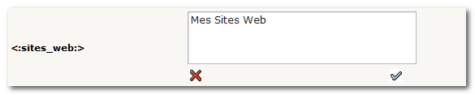
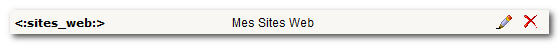

@sous_titre@
@plugin_name@ est un plug-in pour SPIP (à partir de la version 1.9.2) qui permet de surcharger les raccourcis texte utilisés dans vos squelettes.
Ce plug-in vous sera peut-être utile si vous voulez déléguer la gestion des raccourcis à un administrateur restreint, ou simplement vouloir personnaliser les raccourcis texte sans modifier vos squelettes.
Par exemple, le webmestre du site met en place les squelettes nécessaires, mais l'administrateur des rubriques souhaite modifier l'intitulé de certains éléments permanents (article suivant, articles de cet auteur, etc.) Pour modifier ces éléments permanents, il faut modifier le squelette de la rubrique ou de l'article concerné, parfois éditer le fichier local_fr.php, puis placer l'ensemble sur le site via FTP. Les administrateurs restreints n'ont pas toujours cette possibilité et le webmestre se retrouve souvent consulté pour effectuer une modification somme toute peu passionnante.
N’installez pas @plugin_name@ en production sans l’avoir testé et validé correctement.
@plugin_name@ est diffusé gratuitement sous licence GNU/GPL, sans aucune garantie de bon fonctionnement. Vous êtes seul responsable de l’installation et de la mise en œuvre de @plugin_name@ sur votre site.
Les administrateurs toutes rubriques peuvent accéder à cette page de configuration.
La page de configuration du @plugin_name@ permet de déléguer l'administration des raccourcis aux administrateurs restreints.
Pour accéder à la page de configuration du @plugin_name@, cliquez sur le bouton Configuration puis sur l'onglet Raccourcis texte.
Cette page de configuration permet également de prendre en compte les raccourcis privés, et ceux de SPIP.
Si votre site est multilingue, vous avez la possibilité de sélectionner les langues définies (via la page de configuration multilingue) ou celles réellement utilisées sur votre site.
Pour ajouter des raccourcis à vos squelettes, ce raccourci doit exister, soit dans les fichiers officiels de la distribution, soit dans votre fichier local de langue. Par exemple, local_fr.php.
Survolez sur le bouton Edition pour accéder au bouton vous donnant l'accès à la page de gestion des raccourcis.
Si le site est multilingue, le menu de sélection du même nom apparaît dans la liste des raccourcis. Ce menu permet de naviguer entre les différentes versions des raccourcis.
La page d'édition des raccourcis affiche les raccourcis ainsi :

Le raccourci <:sites_web:> a ici pour valeur "Sites Web".
Cliquez sur le petit crayon, dans la colonne de droite. Un formulaire apparaît et vous propose de personnaliser le raccourci.
Si votre site est multilingue, le formulaire vous propose de modifier ce raccourci pour les différentes langues utilisées sur votre site.
Il ne vous reste plus qu'à compléter les différents champs. Dans l'exemple multilingue ci-dessus, la version française du texte de votre raccourci est à placer à la droite de [fr].
Si votre site n'est pas multilingue, ou s'il n'utilise qu'une seule langue, seul le texte de la langue utilisée apparaît. Il est inutile dans ce cas d'envelopper le contenu du raccourci par le tag "multi".

Annulez (petite croix) ou validez (petit V) pour afficher le contenu du raccourci.

La petite croix à droite du contenu indique que le raccourci a été personnalisé. Vous pouvez cliquer sur cette petite croix pour supprimer cette personnalisation.
La petite croix disparaît, signifiant que le contenu du raccourci affiché est le contenu original.
Après installation et configuration du @plugin_name@ les fichiers de traduction situés dans vos squelettes ne sont plus pris en compte. Il vous faut recopier les raccourcis personnalisés (ceux de votre local_fr.php, etc.) dans les préférences du @plugin_name@.
Ne supprimez pas vos fichiers de traductions. Ils vous seront peut-être utiles si vous désinstallez @plugin_name@. De plus, ils sont utilisés par le @plugin_name@ pour retrouver la traduction originale.
Pour recopier vos traductions dans les préférences du @plugin_name@, deux solutions :
Si un raccourci est issu du fichier local au squelette (local_fr.php, etc.) il est entouré d'un petit filet rouge en pointillé.
Pensez à sauvegarder de temps à autres les fichiers de traduction du @plugin_name@. Ils sont dans le dossier lang/ du plug-in. Leur nom commence tous par "local".
@plugin_name@ n'écrit que dans un seul champ de la table spip_meta : "raper_preferences".
Pour le désinstaller, il suffit d'aller sur la page d'administration des plug-ins et de cliquer sur la petite valise du @plugin_name@ pour effacer ses préférences.
Attention: un click sur la petite valise, puis sur "Effacer TOUT" supprime également les fichiers de traduction du @plugin_name@. Si vous ne désirez pas supprimer ces fichiers de traduction tout en désactivant le plug-in, ne cliquez pas sur la petite valise, décochez simplement la petite case à gauche du nom du plug-in.